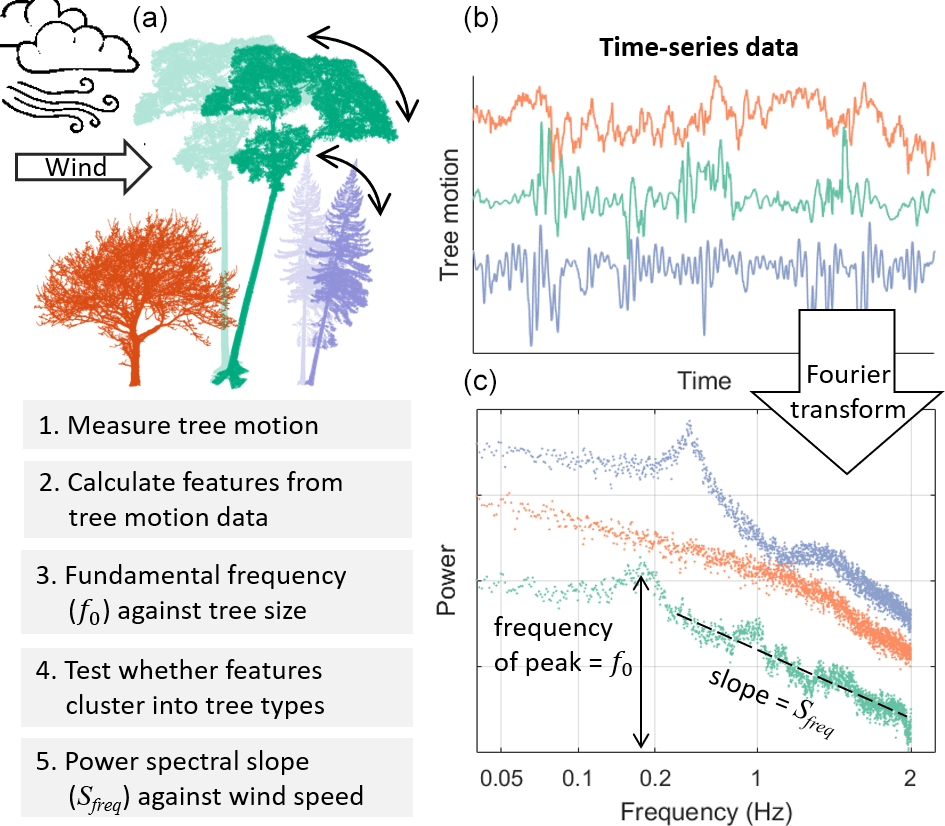

The motion of trees in the wind: A data synthesis
![]()
Abstract
Interactions between wind and trees control energy exchanges between the atmosphere and forest canopies. This energy exchange can lead to the widespread damage of trees, and wind is a key disturbance agent in many of the world’s forests. However, most research on this topic has focused on conifer plantations, where risk management is economically important, rather than broadleaf forests, which dominate the forest carbon cycle. This study brings together tree motion time-series data to systematically evaluate the factors influencing tree responses to wind loading, including data from both broadleaf and coniferous trees in forests and open environments.
We found that the two most descriptive features of tree motion were (a) the fundamental frequency, which is a measure of the speed at which a tree sways and is strongly related to tree height, and (b) the slope of the power spectrum, which is related to the efficiency of energy transfer from wind to trees. Intriguingly, the slope of the power spectrum was found to remain constant from medium to high wind speeds for all trees in this study. This suggests that, contrary to some predictions, damping or amplification mechanisms do not change dramatically at high wind speeds, and therefore wind damage risk is related, relatively simply, to wind speed.
Conifers from forests were distinct from broadleaves in terms of their response to wind loading. Specifically, the fundamental frequency of forest conifers was related to their size according to the cantilever beam model (i.e. vertically distributed mass), whereas broadleaves were better approximated by the simple pendulum model (i.e. dominated by the crown). Forest conifers also had a steeper slope of the power spectrum.We interpret these finding as being strongly elated to tree architecture; i.e. conifers generally have a simple shape due to their apical dominance, whereas broadleaves exhibit a much wider range of architectures with more dominant crowns.
Illustrative figure

Materials
BibTeX citation
@article{Jacksonetal:2021,
Author = {Toby Jackson, Sarab Sethi, Ebba Dellwik, Nikolas Angelou, Amanda Bunce, Tim van Emmerik, Marine Duperat, Jean-Claude Ruel, Axel Wellpott, Skip Van Bloem, Alexis Achim, Brian Kane, Dominick M. Ciruzzi, Steven P. Loheide II, Ken James, <strong>Daniel C. Burcham</strong>, John Moore, Dirk Schindler, Sven Kolbe, Kilian Wiegmann, Mark Rudnicki, Victor J. Lieffers, John Selker, Andrew V. Gougherty, Tim Newson, Andrew Koeser, Jason Miesbauer, Roger Samelson, Jim Wagner, Anthony R. Ambrose, Andreas Detter, Steffen Rust, David Coomes, and Barry Gardiner},
Doi = {10.5194/bg-18-4059-2021},
Journal = {Biogeosciences},
Month = {7},
Pages = {4059-4072},
Title = {The motion of trees in the wind: A data synthesis},
Volume = {18},
Year = {2021}}